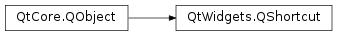

QShortcut¶
Synopsis¶
Functions¶
- def
autoRepeat() - def
context() - def
id() - def
isEnabled() - def
key() - def
parentWidget() - def
setAutoRepeat(on) - def
setContext(context) - def
setEnabled(enable) - def
setKey(key) - def
setWhatsThis(text) - def
whatsThis()
Signals¶
- def
activated() - def
activatedAmbiguously()
Detailed Description¶
The
PySide2.QtWidgets.QShortcutclass is used to create keyboard shortcuts.The
PySide2.QtWidgets.QShortcutclass provides a way of connecting keyboard shortcuts to Qt’s signals and slots mechanism, so that objects can be informed when a shortcut is executed. The shortcut can be set up to contain all the key presses necessary to describe a keyboard shortcut, including the states of modifier keys such as Shift, Ctrl, and Alt.On certain widgets, using ‘&’ in front of a character will automatically create a mnemonic (a shortcut) for that character, e.g. “E&xit” will create the shortcut Alt+X (use ‘&&’ to display an actual ampersand). The widget might consume and perform an action on a given shortcut. On X11 the ampersand will not be shown and the character will be underlined. On Windows, shortcuts are normally not displayed until the user presses the Alt key, but this is a setting the user can change. On Mac, shortcuts are disabled by default. Call
qt_set_sequence_auto_mnemonic()to enable them. However, because mnemonic shortcuts do not fit in with Aqua’s guidelines, Qt will not show the shortcut character underlined.For applications that use menus, it may be more convenient to use the convenience functions provided in the
PySide2.QtWidgets.QMenuclass to assign keyboard shortcuts to menu items as they are created. Alternatively, shortcuts may be associated with other types of actions in thePySide2.QtWidgets.QActionclass.The simplest way to create a shortcut for a particular widget is to construct the shortcut with a key sequence. For example:
shortcut = QShortcut(QKeySequence(self.tr("Ctrl+O", "File|Open")), parent)When the user types the
key sequencefor a given shortcut, the shortcut’sPySide2.QtWidgets.QShortcut.activated()signal is emitted. (In the case of ambiguity, thePySide2.QtWidgets.QShortcut.activatedAmbiguously()signal is emitted.) A shortcut is “listened for” by Qt’s event loop when the shortcut’s parent widget is receiving events.A shortcut’s key sequence can be set with
PySide2.QtWidgets.QShortcut.setKey()and retrieved withPySide2.QtWidgets.QShortcut.key(). A shortcut can be enabled or disabled withPySide2.QtWidgets.QShortcut.setEnabled(), and can have “What’s This?” help text set withPySide2.QtWidgets.QShortcut.setWhatsThis().
-
class
PySide2.QtWidgets.QShortcut(arg__1, arg__2, arg__3[, arg__4=Qt.WindowShortcut])¶ -
class
PySide2.QtWidgets.QShortcut(parent) -
class
PySide2.QtWidgets.QShortcut(key, parent[, member=nullptr[, ambiguousMember=nullptr[, context=Qt.WindowShortcut]]]) Parameters: - arg__2 –
PySide2.QtWidgets.QWidget - key –
PySide2.QtGui.QKeySequence - member – str
- arg__1 –
PySide2.QtGui.QKeySequence - arg__3 –
PyCallable - ambiguousMember – str
- arg__4 –
PySide2.QtCore.Qt.ShortcutContext - context –
PySide2.QtCore.Qt.ShortcutContext - parent –
PySide2.QtWidgets.QWidget
Constructs a
PySide2.QtWidgets.QShortcutobject for theparentwidget. Since no shortcut key sequence is specified, the shortcut will not emit any signals.See also
Constructs a
PySide2.QtWidgets.QShortcutobject for theparentwidget. The shortcut operates on its parent, listening forPySide2.QtGui.QShortcutEvents that match thekeysequence. Depending on the ambiguity of the event, the shortcut will call thememberfunction, or theambiguousMemberfunction, if the key press was in the shortcut’scontext.- arg__2 –
-
PySide2.QtWidgets.QShortcut.activated()¶
-
PySide2.QtWidgets.QShortcut.activatedAmbiguously()¶
-
PySide2.QtWidgets.QShortcut.autoRepeat()¶ Return type: PySide2.QtCore.bool
-
PySide2.QtWidgets.QShortcut.context()¶ Return type: PySide2.QtCore.Qt.ShortcutContext
-
PySide2.QtWidgets.QShortcut.id()¶ Return type: PySide2.QtCore.intReturns the shortcut’s ID.
See also
QShortcutEvent.shortcutId()
-
PySide2.QtWidgets.QShortcut.isEnabled()¶ Return type: PySide2.QtCore.bool
-
PySide2.QtWidgets.QShortcut.key()¶ Return type: PySide2.QtGui.QKeySequenceSee also
-
PySide2.QtWidgets.QShortcut.parentWidget()¶ Return type: PySide2.QtWidgets.QWidgetReturns the shortcut’s parent widget.
-
PySide2.QtWidgets.QShortcut.setAutoRepeat(on)¶ Parameters: on – PySide2.QtCore.bool
-
PySide2.QtWidgets.QShortcut.setContext(context)¶ Parameters: context – PySide2.QtCore.Qt.ShortcutContext
-
PySide2.QtWidgets.QShortcut.setEnabled(enable)¶ Parameters: enable – PySide2.QtCore.bool
-
PySide2.QtWidgets.QShortcut.setKey(key)¶ Parameters: key – PySide2.QtGui.QKeySequenceSee also
-
PySide2.QtWidgets.QShortcut.setWhatsThis(text)¶ Parameters: text – unicode
-
PySide2.QtWidgets.QShortcut.whatsThis()¶ Return type: unicode
© 2018 The Qt Company Ltd. Documentation contributions included herein are the copyrights of their respective owners. The documentation provided herein is licensed under the terms of the GNU Free Documentation License version 1.3 as published by the Free Software Foundation. Qt and respective logos are trademarks of The Qt Company Ltd. in Finland and/or other countries worldwide. All other trademarks are property of their respective owners.